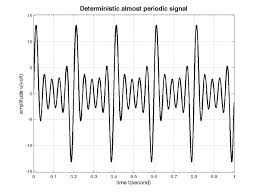
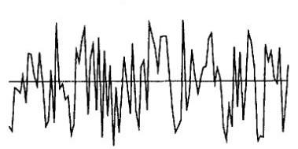

Digital Signal Processing
¿Qué es?
El DSP es una área de estudio que se encarga del Análisis, Transformación y Síntesis de la información representada de forma digital.
¿Que es una señal?
Las señales son magnitudes físicas mediante las que se puede transmitir informacion.
Tipos de Señales
Se pueden clasificar según:
- Su naturaleza
- Tipo de variable independiente y dependiente
- Cantidad de variables y canales
- Periodicidad
- Paridad
Naturaleza
| Determinística | Estocastica |
|  |  |
Tipo de Variable
| Dependiente | Independiente | ||
|---|---|---|---|
| Continua | Discreta | ||
| Analógica |  |
 |
|
| Digital |  |
 |
|
Periodicidad de la Señal
| Periodica | Aperiodica |
| $$x(t+nT) = x_(t)$$ | $$x(t+nT) \neq x_(t)$$ |
 |
 |
Tambien existen señales quasi-periodicas como el habla.
Paridad
| Par | Impar |
| $$x_(t) = x(-t)$$ | $$x_(t) = -x(-t)$$ |
 |
 |
Análisis
Se busca conocer las caracteristicas principales de la señal, para luego poder modelizarla y procesarla.
Tipos de Analisis
Se puede realizar en 3 campos diferentes:
- Temporal/Espacial
- Espectral
- Cepstral
Temporal/Espacial
| Amplitud | Magnitud | Periodo | Potencia Instantanea | Potencia Media |
|---|---|---|---|---|
| $$x_{[n]}$$ | $$\left|x_{[n]}\right|$$ | $$x_{[n]} = x_{[n+N]}$$ | $${x_{[n]}}^2$$ | $$\frac{1}{N}\sum_{n=0}^{N} {x_{[n]}}^2$$ |
| Autocorrelacion | Magnitud | Periodo | Potencia | |
| $$x_{(t)}$$ | $$\left|x_{(t)}\right|$$ | $$x_{(t)} = x_{(t+T)}$$ | $$\left|x_{(t)}\right|^2$$ |
Muestreo
Para digitalizar una señal
Señales tipicas
Existen señales que debido a sus caracteristicas, son muy utilizadas en el area:
- Coseno/Seno
- Exponencial Compleja
- Delta
- Cuadrada
- Rampa